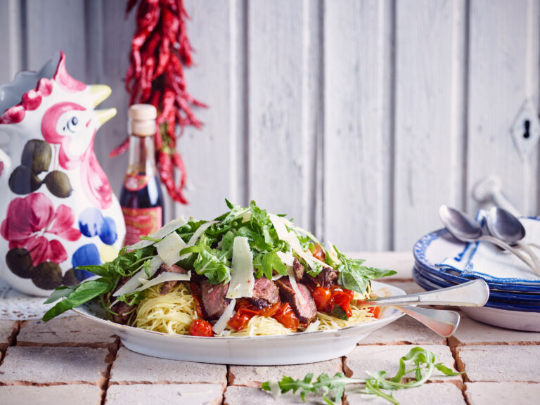

Pasta met kerstomaatjes

Ingredienten
- halve paprika
- 75 gr kerstomaatjes
- 50 gr gerookte zalm
- 1 teentje knoflook
- 125 gr mascarpone
- peper
Ingredienten
- Snij de paprika in kleine stukje en halveer de kerstomaatjes. Snij de gerookte zalm in stukjes
- Stoof uw teentje knoflook in olijfolie tot de olie het aroma heeft overgenomen en verwijder dan het
teentje.
- Kook ondertussen het water voor de pasta en voeg de pasta aan het water toe op kookpunt.
- Voeg de stukjes paprika en kerstomaatjes toe, laat 5 minuutjes garen en breng op smaak met peper.
- Voeg de zalm en de mascarpone toe aan de paprika en kerstomaatjes en laat nog eens 5 minuutjes garen.
- Giet de pasta af en voeg bij aan de saus.